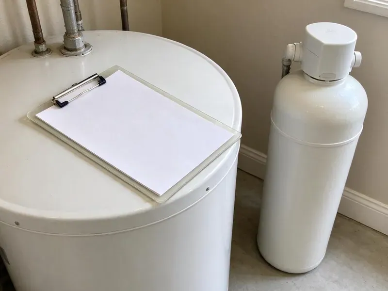

Plumbing Maintenance in Smyrna, TN
BGV Plumbing flushes water heaters, tests valves and looks for hidden leaks across Smyrna, TN to stretch equipment life.
- No Surprise Fees
- Residential and Commercial Plans
- Local Tennessee Experts
- Experienced Technicians

Book a Whole-Home Plumbing Tune-Up in Smyrna, TN
A dripping valve today is a ceiling stain next year. Book a checkup.
Routine Plumbing Care for Smyrna, TN Homes and Businesses
BGV Plumbing adjusts maintenance for local conditions. Hot, humid summers and cool winters with frequent freeze and thaw cycles are the main climate stresses on plumbing in Tennessee. A yearly visit catches wear on hose bibs, relief valves, supply lines and water heater parts before the season that is hardest on them. Equipment lasts longer.
Our expertise includes:
- Water heater flushing, anode checks and T&P valve tests
- Pressure regulator testing and whole-home leak checks
- Water softener service and valve inspection

Additional Plumbing Maintenance Services in Smyrna, TN
Our maintenance and specialty plumbing services in Smyrna, TN catch small problems before they become emergencies.


Customers
Why Choose BGV Plumbing for Plumbing Maintenance in Smyrna, TN?
Most plumbing emergencies start as small problems that nobody noticed. A faint drip, a running toilet or a water heater that rumbles when it fires all cost very little to fix during a checkup and a lot more after something lets go. Finding them is the point.
- Priority Service, Plan members get priority booking and lower repair rates.
- Confidence at Home, You know which valves work and where the shutoffs are.
- Better Performance, Correct pressure and clean equipment can lower water and energy bills.
Citywide Coverage
Homeowners, landlords and businesses in every part of Smyrna use our plans. Visits fit your schedule, tenants get a call, and owners get the report. Tenants get notice.
Experienced Team
Our team services water heaters, softeners, backflow devices, gas lines and drains. One crew covers everything, so you are not juggling several companies. You book fewer appointments.
Safety-First Approach
Safety devices get tested on every visit. We confirm relief valves, gas shutoffs and backflow devices all work. They have to work.
Trusted Certified Smyrna Plumbing Services Professionals
At BGV Plumbing, we take pride in licensed, certified plumbing services throughout Smyrna, TN. Those papers on the wall mean something. Our plumbers hold recognized industry credentials, and they follow strict safety and quality rules on every repair, installation and maintenance call we run.
Call Us Now PHCC Plumbing Contractor Recognition
PHCC Plumbing Contractor Recognition Better Business Bureau (BBB) Accreditation
Better Business Bureau (BBB) Accreditation Angi Certified Pro
Angi Certified Pro ISO 9001 Quality Management Certification
ISO 9001 Quality Management CertificationWhat a Plumbing Maintenance Visit Covers in Smyrna, TN
Repipe Assessments in Smyrna, TN
Polybutylene and old galvanized pipe leak more. We identify the pipe type, look for signs of failure and tell you whether repiping is urgent or can wait. We quote PEX and copper. Repiping can be done in stages.

Drain Cleaning as Maintenance in Smyrna
Slow drains rarely fix themselves. Camera checks and cleaning on problem lines keep grease and roots from causing a holiday backup. Jetting helps on grease. Root-prone lines go on a schedule.
Getting Ready for the Hard Months in Smyrna, TN
Weak spots show up in bad weather. Most Tennessee winters bring a handful of hard freezes, and occasional arctic blasts can burst pipes in homes that are not ready for deep cold. During maintenance we look for exposed pipes in garages and crawl spaces, hose bibs without vacuum breakers and outdoor lines that need draining, and we fix those before the season that tests them. Pipe sleeves cost little. Burst pipes are not.
Whole-Home Plumbing Inspection in Smyrna, TN
Room by room, fixture by fixture. Under-sink checks, toilet valve tests, fixture runs, washer hose inspection and a pressure reading cover the house. Washers and flappers get replaced that day. Larger repairs get a written price.
Drain Camera Checks During Maintenance in Smyrna
Sewer problems hide underground. A camera run from the cleanout shows root intrusion, grease buildup, sags and offset joints long before they cause a backup into the lowest drain in the house. Much of Tennessee sits on clay soils over limestone, and shallow rock can make digging for sewer and water line repairs slower and harder. We show you the video. Catching a cracked joint early can mean a spot repair instead of a full replacement.
Sump Pump Testing in Smyrna, TN
Basements flood when the pump fails during a storm. Heavy spring and fall rains can cause flash flooding in Tennessee, and saturated ground often leads to wet crawlspaces and sewer backups. We fill the pit to test the float, check the discharge line and confirm the check valve holds. Backup pumps get tested too.
Gas Line and Pipe Material Checks in Smyrna, TN
Gas leaks are the one item we never skip. Visible gas piping, connectors and shutoffs get checked, and old flex connectors get flagged. Pipe material matters too. Older pipe types get flagged with repipe choices.

Commercial and Priority Maintenance in Smyrna, TN
Restaurants, offices and apartments need plumbing that works every day. We set maintenance schedules for drains, water heaters, backflow devices and restrooms, and maintenance clients move to the front of the line when something does go wrong after hours. Reports come every visit. Use them for planning.
Plumbing Maintenance Near You in Smyrna, TN
Local techs know local houses. Around Smyrna, we see the same issues year after year, failing pressure regulators, sediment-heavy water heaters and old supply lines, so the trucks carry the parts to fix most of them on the first visit. Most fixes happen same visit.
Searching for plumbing maintenance near you in Smyrna, TN? BGV Plumbing has techs working the area every day. We know local houses, from scaled-up heaters to high-pressure supply lines and shifted foundations. We plan for it.
BGV Plumbing at a Glance
- Fully licensed plumbing team covering Smyrna, TN
- 24/7 emergency service with same-day scheduling
- Clear written estimates, no hidden fees
- 4.9-star rated by 932+ Tennessee customers
Smyrna Map
Smyrna Information
- Population
- 57,418
- Area codes
- 615/931/423
- Service area
- Smyrna and communities within 40 miles
- Nearby
- Murfreesboro, Franklin, Nashville, Hendersonville
Scale and ground movement wear on pipes and fittings in Smyrna, TN homes year after year. Water hardness in Tennessee varies by source, and areas that draw from limestone aquifers or springs tend to have fairly hard water. Much of Tennessee sits on clay soils over limestone, and shallow rock can make digging for sewer and water line repairs slower and harder.
Expert Services
Reach out to BGV Plumbing for reliable plumbing work done by licensed pros in Smyrna, TN.
Our Specialized Plumbing Services in Smyrna, TN
At BGV Plumbing, we handle the full list of plumbing services across Smyrna, TN. We go from leak detection all the way to full system installations, for homes and commercial buildings, and we do it quickly at a fair price. Here are the core services we offer:


Inspection to Report: Plumbing Maintenance in Smyrna, TN
From booking to the final report, here is the routine.
Call to Book
Call (615) 518-0893 to schedule a visit or ask about plans. We confirm what you need.
Checklist Inspection
We work through every item on the list. Issues get photographed.
Report and Service
We complete the maintenance that visit. The report comes with photos.
Frequently Asked Questions About Plumbing Maintenance in Smyrna
A basic water heater flush and inspection in Smyrna usually runs $150 to $300. Adding a softener, sump, backflow or camera check brings it to roughly $300 to $600. Price comes first.
Yearly service suits most homes. Hard water, older pipe or a well can justify more frequent checks.
All the major ones. We work on Rheem, AO Smith, Bradford White, Noritz, Culligan, Morton and Kenmore.
Check for leaks, clean aerators and watch the water meter. Leave gas and valve testing to a plumber.
No permit for routine maintenance. Gas work, water heater replacement or repiping often does, and we pull it.
Most major brands. Rinnai, Rheem, Bradford White, AO Smith, Navien, Zoeller, Liberty, Culligan and Morton are all routine.
Some of it. You can check for visible leaks and clean faucet aerators, but gas water heaters, tankless descaling, relief valve testing and hidden leak checks need tools and training most homeowners do not have. Gas work needs a license.
Not for flushing heaters or testing pumps. Major repairs found during the visit may need one, and we pull it.
Hear From Customers Who Hired Our Plumbing Experts

Mark T.
The floor drain in our office break room backed up every few weeks. The plumber ran a cable, then put a camera down and found roots at a joint about thirty feet out. Seeing it on the screen made the decision easy.
Drain Cleaning · Spring Hill, TN
Patricia H.
We had a slab leak that two other companies could not find. BGV Plumbing located it in under an hour with a listening device. They rerouted the line through the attic instead of breaking up the floor, so we kept our kitchen tile.
Slab Leak Repair · Gallatin, TN
Nathan E.
Our tankless heater kept throwing an error code and shutting off mid shower. The tech flushed the heat exchanger, which was full of scale, and replaced a bad flow sensor. Hot water has been steady for half a year now.
Water Heater Repair · Spring Hill, TNAngela D.
Our sump pump quit during a storm and the water was an inch from the basement carpet. BGV Plumbing put in a new pump with a battery backup that same evening. We have had two heavy rains since. It kicked on both times.
Sump Pump · Hendersonville, TNDiane F.
My kitchen faucet had dripped for months and I finally got tired of hearing it at night. BGV Plumbing came out the next morning, replaced the cartridge and the O rings, and tightened a loose base that was letting water under the sink.
Faucet Repair · Murfreesboro, TNCarlos V.
Our house still had galvanized pipe, and upstairs the shower was a trickle. The crew repiped everything in PEX over three days and patched every drywall hole before they left. The pressure difference is night and day.
Repiping · Nashville, TN